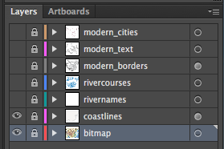

A base svg file is one without any dated borders, etc.
Temporarily delete any dated or temporary stuff. Set all layers to non-visible, except for coastlines and bitmap. You should see this:

File > Save a Copy
Select SVG and set name to svg_raw/base.svg
Settings:
Set the permissions to writeable.
Run howto-data/preparebase.php. This removes the top and end of the file, and the bitmap, and changes all .st... style names to .bt... style names.
It creates the file svg/base.php, which is later included into dated files.
Make a backup, then temporarily delete all base information. Set all layers to visible. You should see this:

File > Save a Copy
Select SVG and set name to svg_raw/<era>_<date>.svg
Settings as for base version.
Set the permissions to writeable.
Run howto-data/adddates.php with parameter ?dates=XX where XX is the year of the map. (For BC use -XX. Multiple, comma-separated dates are allowed.) This adds the navigation, cleans up some styling (esp. fonts), includes the latest base data, etc.
Open howto-data/longlat.html and follow the instructions.